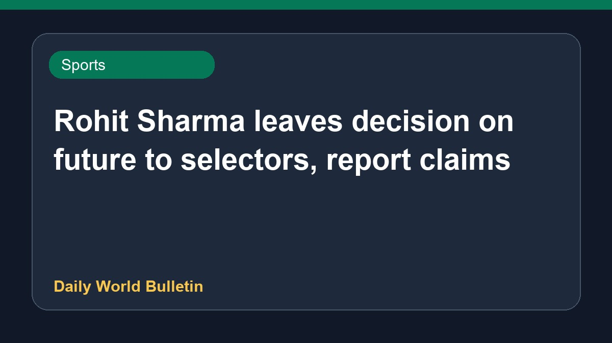

Rohit Sharma leaves decision on future to selectors, report claims

Recent reports indicate that India cricketer Rohit Sharma has effectively placed his future decisions in the hands of the national selectors. Meanwhile, speculations surround the position of chief selector Ajit Agarkar, with discussions emerging about potential replacements, including former player VVS Laxman. Media reports suggest that selectors are reviewing World Cup plans regarding senior players, creating discussions within cricketing circles concerning team leadership and selection policies. Specific official statements from the Board of Control for Cricket in India remain limited.
Original source: Sports News Sources
'You drop me': Ex-cricketer says Rohit Sharma has thrown the ball into selectors' court - The Times of India ↗
'You drop me': Ex-cricketer says Rohit Sharma has thrown the ball into selectors' court - The Times of India ↗